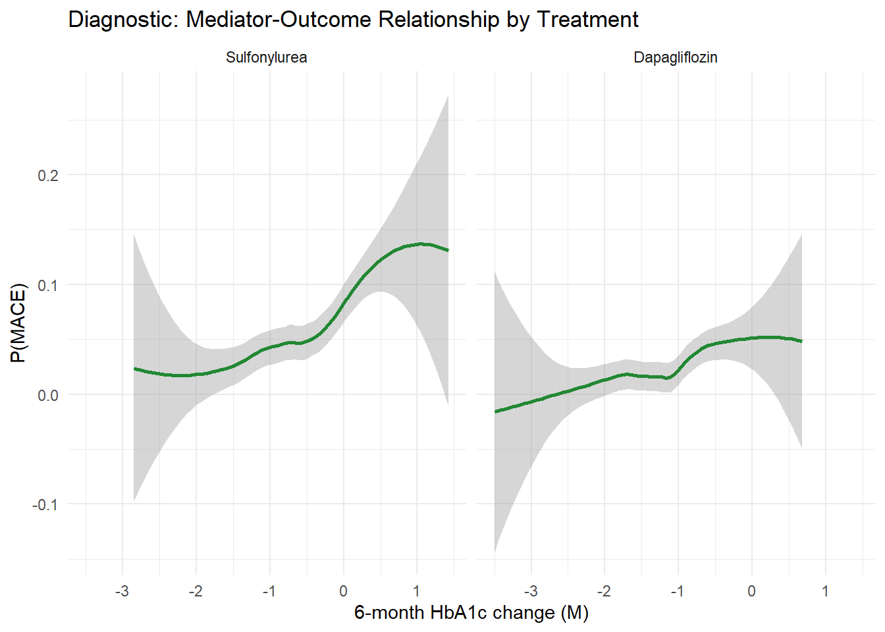

18An Illustrated Guide to TMLE for Mediation Analysis
Decomposing total effects into direct and indirect pathways
19 An Illustrated Guide to TMLE for Mediation Analysis
How to decompose a drug’s total effect into what works directly and what works through an intermediate mechanism
In pharmacoepidemiology, we often want to know not just whether a drug works, but how it works. Does dapagliflozin reduce cardiovascular events because it lowers blood pressure, because it improves glucose control, or through some other mechanism entirely?
Mediation analysis decomposes a total causal effect into:
A direct effect — the part of the treatment effect NOT operating through the mediator
An indirect effect — the part operating THROUGH the mediator
TMLE provides a principled framework for this decomposition that is doubly robust and compatible with machine learning.
20 1. Clinical Motivation
20.1 The Pharmacoepidemiologic Question
SGLT2 inhibitors (like dapagliflozin) have shown surprising cardiovascular benefits in type 2 diabetes trials. The FDA and sponsor want to understand the mechanism:
How much of dapagliflozin’s effect on reducing MACE operates through HbA1c reduction (glycemic pathway), and how much operates through other mechanisms (e.g., blood pressure, weight loss, direct cardiac effects)?
This matters because:
If the effect is entirely through glycemic control, other glucose-lowering drugs should work too
If the effect is mostly direct, SGLT2 inhibitors have a unique cardiovascular benefit worth highlighting in labeling
Understanding mechanisms guides future drug development
Question: How much of the \(A \to Y\) effect goes through \(A \to M \to Y\)?
21 2. Mediation Analysis: The Causal Roadmap
21.1 Step 1: Define the Causal Question
In mediation, we decompose the total effect into two pieces:
Total Effect = Natural Direct Effect + Natural Indirect Effect
Total Effect (TE):\[TE = E[Y(1, M(1))] - E[Y(0, M(0))]\] The overall effect of treatment on outcome (what we estimated in Chapter 2.4).
Natural Direct Effect (NDE):\[NDE = E[Y(1, M(0))] - E[Y(0, M(0))]\] The effect of treatment on outcome if we could hold the mediator at its control value. “What if we gave the drug but magically blocked it from changing HbA1c?”
Natural Indirect Effect (NIE):\[NIE = E[Y(1, M(1))] - E[Y(1, M(0))]\] The effect of the mediator change induced by treatment, while keeping treatment on. “What if we didn’t change the drug assignment but shifted HbA1c as dapagliflozin would?”
The decomposition is: \(TE = NDE + NIE\)
Plain Language
NDE: “How much does the drug help even if it didn’t change HbA1c at all?” (the direct pathway — blood pressure, weight, cardiac remodeling, etc.)
NIE: “How much does the drug help specifically because it lowers HbA1c?” (the glycemic pathway)
If the NIE is large, glycemic control is the main mechanism. If the NDE is large, the drug works through non-glycemic pathways.
21.2 Step 2: The Causal Model (DAG)
The mediation DAG adds one node compared to the standard confounding DAG:
W (confounders)
/ | \
/ | \
v v v
A → M → Y
| ↑
└───────┘
(direct)
\(W \to A\): confounders affect treatment
\(W \to M\): confounders affect the mediator
\(W \to Y\): confounders affect the outcome
\(A \to M\): treatment affects the mediator (dapagliflozin lowers HbA1c)
\(M \to Y\): the mediator affects the outcome (HbA1c affects MACE risk)
\(A \to Y\): treatment directly affects the outcome (non-glycemic pathways)
Critical Assumption: No Mediator-Outcome Confounding Affected by Treatment
For mediation to work, there must be no confounder of the M → Y relationship that is itself affected by treatment. If treatment changes a variable \(Z\) that confounds \(M \to Y\), the natural direct and indirect effects are not identifiable from observed data.
A → Z → M → Y ← Z confounds M→Y AND is affected by A
↑
Z ──────→ Y ← This breaks identification!
This is the hardest assumption in mediation analysis. In our example: does dapagliflozin change something (like blood pressure or weight) that both affects HbA1c trajectory AND independently affects MACE? If so, we need more advanced methods (interventional effects).
21.3 Step 3: Assumptions for Mediation
To identify the NDE and NIE, we need the standard confounding assumptions PLUS additional ones:
No unmeasured treatment-outcome confounding:\(Y(a, m) \perp\!\!\!\perp A \mid W\)
No unmeasured mediator-outcome confounding:\(Y(a, m) \perp\!\!\!\perp M \mid A, W\)
No unmeasured treatment-mediator confounding:\(M(a) \perp\!\!\!\perp A \mid W\)
Cross-world independence: No \(W\)-adjusted confounder of \(M \to Y\) is affected by \(A\)
The Cross-World Problem
Assumption 4 is called the “cross-world” assumption because the NDE involves a quantity \(Y(1, M(0))\) — the outcome under treatment \(A = 1\) with the mediator value that would have occurred under \(A = 0\). This never happens in reality; it combines potential outcomes from two different “worlds.”
This assumption is untestable and often debated. If you are uncomfortable with it, consider interventional (in)direct effects, which replace the cross-world assumption with a weaker one. We briefly discuss this in Section 9.
21.4 Step 4: Statistical Estimands
Under the assumptions above, the NDE and NIE are identified by statistical quantities:
The classic approach fits two regressions and reads off coefficients. Let’s see what it gives us:
# Step 1: Total effecttotal_mod <-glm(Y ~ A + age + bmi + hba1c_bl + cvd + egfr + statin,family = binomial, data = dat)# Step 2: Mediator modelmed_mod <-lm(M ~ A + age + bmi + hba1c_bl + cvd + egfr + statin,data = dat)# Step 3: Outcome model with mediatorfull_mod <-glm(Y ~ A + M + age + bmi + hba1c_bl + cvd + egfr + statin,family = binomial, data = dat)cat("--- Baron-Kenny style coefficients ---\n")
--- Baron-Kenny style coefficients ---
cat("Total effect (A in model without M):", round(coef(total_mod)["A"], 3), "(log-OR)\n")
Total effect (A in model without M): -0.548 (log-OR)
cat("Direct effect (A in model with M): ", round(coef(full_mod)["A"], 3), "(log-OR)\n")
Direct effect (A in model with M): -0.205 (log-OR)
cat("Mediator effect (M on Y): ", round(coef(full_mod)["M"], 3), "(log-OR)\n")
Mediator effect (M on Y): 0.689 (log-OR)
cat("Treatment on mediator: ", round(coef(med_mod)["A"], 3), "(mean change)\n")
Treatment on mediator: -0.514 (mean change)
What’s Wrong with Baron-Kenny Here?
Scale: The coefficients are on the log-odds scale. The “difference in coefficients” method (\(TE - DE\)) does not equal the indirect effect on the risk difference scale for non-linear models.
Non-collapsibility: The log-odds ratio is non-collapsible — the coefficient of \(A\) changes when you add \(M\) to the model, even if there is NO mediation, simply because of the non-linear link function.
No valid standard errors for the indirect effect without additional assumptions.
No double robustness — if either model is misspecified, everything is biased.
We need a proper decomposition on the risk difference scale.
23.2 4B. Naive Regression-Based Decomposition on the Risk Difference Scale
A better approach: use G-computation-style prediction, but decompose manually.
# Outcome model including the mediatorq_med_mod <-glm(Y ~ A + M + age + bmi + hba1c_bl + cvd + egfr + statin + A:cvd,family = binomial, data = dat)# Mediator modelm_mod <-lm(M ~ A + age + bmi + hba1c_bl + egfr, data = dat)# Predicted mediator values under A=0 and A=1M_hat_A0 <-predict(m_mod, newdata = dat %>%mutate(A =0))M_hat_A1 <-predict(m_mod, newdata = dat %>%mutate(A =1))# E[Y(1, M(0))]: set A=1, M=M_hat_A0EY_1_M0 <-mean(predict(q_med_mod,newdata = dat %>%mutate(A =1, M = M_hat_A0),type ="response"))# E[Y(0, M(0))]: set A=0, M=M_hat_A0EY_0_M0 <-mean(predict(q_med_mod,newdata = dat %>%mutate(A =0, M = M_hat_A0),type ="response"))# E[Y(1, M(1))]: set A=1, M=M_hat_A1EY_1_M1 <-mean(predict(q_med_mod,newdata = dat %>%mutate(A =1, M = M_hat_A1),type ="response"))naive_NDE <- EY_1_M0 - EY_0_M0naive_NIE <- EY_1_M1 - EY_1_M0naive_TE <- EY_1_M1 - EY_0_M0cat("Naive G-comp NDE:", round(naive_NDE, 4), " (true:", round(true_NDE, 4), ")\n")
This approach correctly decomposes the effect on the risk difference scale. But it has the same weakness as point-treatment G-computation: it depends entirely on both the outcome model AND the mediator model being correctly specified. There is no robustness to misspecification.
TMLE adds targeting to make this doubly robust.
24 5. TMLE for Mediation: Step by Step
We now implement a TMLE-based mediation analysis. The algorithm extends the point-treatment TMLE in a specific way: we need to “target” the outcome model not just for the treatment mechanism, but also for the mediator mechanism.
24.1 The Algorithm Overview
┌───────────────────────────────────────┐
│ Step 1: Fit the outcome model │
│ Q(A, M, W) = E[Y | A, M, W] │
│ Predict under (A=1,M) and (A=0,M) │
└───────────────┬───────────────────────┘
│
┌───────────────▼───────────────────────┐
│ Step 2: Fit the mediator model │
│ P(M | A, W) │
│ Needed for NDE/NIE decomposition │
└───────────────┬───────────────────────┘
│
┌───────────────▼───────────────────────┐
│ Step 3: Fit the treatment model │
│ g(W) = P(A=1 | W) │
│ Needed for the clever covariate │
└───────────────┬───────────────────────┘
│
┌───────────────▼───────────────────────┐
│ Step 4: Compute mediation-specific │
│ clever covariates for NDE and NIE │
└───────────────┬───────────────────────┘
│
┌───────────────▼───────────────────────┐
│ Step 5: Fluctuate Q to get Q* │
│ (targeting step for each effect) │
└───────────────┬───────────────────────┘
│
┌───────────────▼───────────────────────┐
│ Step 6: Plug Q* into mediation │
│ formulas to estimate NDE and NIE │
└───────────────────────────────────────┘
24.2 Step 1: Fit the Outcome Model
Step 1: Model E[Y | A, M, W]
Just like standard TMLE, start by fitting a model for the expected outcome. But now the model includes the mediator\(M\) as a predictor alongside treatment \(A\) and confounders \(W\).
\[\hat{Q}(A, M, W) = \hat{E}[Y \mid A, M, W]\]
logit <-function(p) log(p / (1- p))# Outcome model: includes treatment, mediator, and confoundersq_mod <-glm(Y ~ A + M + age + bmi + hba1c_bl + cvd + egfr + statin + A:cvd + A:M,family = binomial, data = dat)# Predict at observed valuesQAM_init <-predict(q_mod, type ="response")# Predict under counterfactual treatment values (keeping M observed)Q1M_init <-predict(q_mod, newdata = dat %>%mutate(A =1), type ="response")Q0M_init <-predict(q_mod, newdata = dat %>%mutate(A =0), type ="response")cat("Q(A,M,W) range:", round(range(QAM_init), 4), "\n")
Q(A,M,W) range: 0.0011 0.3803
24.3 Step 2: Fit the Mediator Model
Step 2: Model P(M | A, W) — The Mediator Distribution
To decompose the total effect, we need to know how the mediator distribution shifts under treatment vs. control. For a continuous mediator, we model \(M \mid A, W\) as normally distributed.
This model serves two purposes:
It tells us what \(M\) values to expect under \(A = 0\) vs. \(A = 1\)
It provides density ratios needed for the clever covariate
# Mediator model: how does M depend on A and W?m_mod <-lm(M ~ A + age + bmi + hba1c_bl + egfr, data = dat)sigma_m <-sigma(m_mod)# Predicted mediator mean under A=0 and A=1M_mean_a0 <-predict(m_mod, newdata = dat %>%mutate(A =0))M_mean_a1 <-predict(m_mod, newdata = dat %>%mutate(A =1))# Density of observed M under each treatment condition# P(M_obs | A=0, W) and P(M_obs | A=1, W)dens_M_A0 <-dnorm(dat$M, mean = M_mean_a0, sd = sigma_m)dens_M_A1 <-dnorm(dat$M, mean = M_mean_a1, sd = sigma_m)cat("Mean mediator shift (A=1 vs A=0):", round(mean(M_mean_a1 - M_mean_a0), 3), "\n")
Mean mediator shift (A=1 vs A=0): -0.512
24.4 Step 3: Fit the Treatment Model
Step 3: Model P(A = 1 | W) — The Propensity Score
Same as standard TMLE. The propensity score is needed for the clever covariates.
g_mod <-glm(A ~ age + bmi + hba1c_bl + cvd + egfr + statin,family = binomial, data = dat)ps <-predict(g_mod, type ="response")ps <-pmax(0.01, pmin(0.99, ps))cat("Propensity score range:", round(range(ps), 3), "\n")
Propensity score range: 0.112 0.707
24.5 Step 4: The Mediation Clever Covariates
Step 4: Clever Covariates for NDE and NIE
This is where mediation TMLE differs from standard TMLE. The clever covariate for the NDE is different from the one for the NIE, because they target different estimands.
For the NDE, we need the expected outcome under \(A = 1\) vs. \(A = 0\) while holding \(M\) at its distribution under \(A = 0\). The clever covariate involves a density ratio that reweights the mediator distribution:
The density ratio \(f(M \mid A=0, W) / f(M \mid A=1, W)\) is what connects the mediator model to the targeting step. It reweights the treated group’s mediator values to look like the control group’s mediator distribution.
# Density ratio: P(M | A=0, W) / P(M | A=1, W)# This ratio "transports" the mediator distribution from control to treatmentdensity_ratio <- dens_M_A0 /pmax(dens_M_A1, 1e-10)# Clever covariate for NDEH_NDE <- dat$A * density_ratio / ps - (1- dat$A) / (1- ps)# Clever covariate for NIEH_NIE <- dat$A / ps - dat$A * density_ratio / pscat("Density ratio range:", round(range(density_ratio), 3), "\n")
Density ratio range: 0.057 21.999
cat("H_NDE range:", round(range(H_NDE), 2), "\n")
H_NDE range: -3.37 31.78
cat("H_NIE range:", round(range(H_NIE), 2), "\n")
H_NIE range: -29 4.32
What Does the Density Ratio Do?
The density ratio \(f(M \mid A=0, W) / f(M \mid A=1, W)\) answers: “How much more (or less) likely is this particular mediator value under control than under treatment?”
Ratio > 1: This mediator value is more typical of the control group → gets upweighted
Ratio < 1: This mediator value is more typical of the treatment group → gets downweighted
Ratio ≈ 1: This mediator value is equally likely under both treatments
When we multiply a treated patient’s outcome by this ratio, we effectively “transport” their mediator to what it would have looked like without treatment — which is exactly what the NDE requires.
24.6 Step 5: Targeting (Fluctuation) for NDE
Step 5: Fluctuate Q to Target the NDE
Just like standard TMLE, we fit a logistic regression with the initial \(\hat{Q}\) as an offset and the NDE clever covariate as the predictor. The coefficient \(\epsilon\) tells us how much to update.
\[\text{logit}(Y) = \text{logit}(\hat{Q}(A, M, W)) + \epsilon_{NDE} \cdot H_{NDE}\]
The NDE is the difference in the targeted outcome predictions, averaged over the population, where the mediator is held at its control distribution.
For the treated group (with density-reweighted mediator), we average: \[\widehat{NDE} = \frac{1}{n}\sum_i \hat{Q}^*_1(M_i, W_i) \cdot r(M_i, W_i) - \frac{1}{n}\sum_i \hat{Q}^*_0(M_i, W_i)\]
where \(r(M_i, W_i)\) is a normalized version of the density ratio that integrates properly.
# For the NDE, we need E[Q*(1,M,W)] where M ~ P(M|A=0,W)# We use the density-ratio weighted average among treated# and the direct average among controls# Approach: Monte Carlo integration over P(M | A=0, W)set.seed(42)n_mc <-30nde_mc <-numeric(n)for (i in1:n) { m_draws <-rnorm(n_mc, mean = M_mean_a0[i], sd = sigma_m)# Density ratio for each MC draw: f(m|A=0,W) / f(m|A=1,W) dr_draws <-dnorm(m_draws, mean = M_mean_a0[i], sd = sigma_m) /pmax(dnorm(m_draws, mean = M_mean_a1[i], sd = sigma_m), 1e-10)# Q*(1, m, W) for each m draw# H_NDE at (A=1, m) = density_ratio(m) / ps newdat_1 <- dat[rep(i, n_mc), ] %>%mutate(A =1, M = m_draws) q1m <-predict(q_mod, newdata = newdat_1, type ="response") q1m_star <-plogis(logit(q1m) + eps_nde * dr_draws / ps[i])# Q*(0, m, W) for each m draw# H_NDE at (A=0, m) = -1 / (1 - ps) newdat_0 <- dat[rep(i, n_mc), ] %>%mutate(A =0, M = m_draws) q0m <-predict(q_mod, newdata = newdat_0, type ="response") q0m_star <-plogis(logit(q0m) + eps_nde * (-1/ (1- ps[i]))) nde_mc[i] <-mean(q1m_star) -mean(q0m_star)}tmle_NDE <-mean(nde_mc)cat("TMLE NDE:", round(tmle_NDE, 4), " (true:", round(true_NDE, 4), ")\n")
The NIE depends on the treatment actually shifting the mediator distribution. If the mediator distributions under \(A = 0\) and \(A = 1\) are identical, there is no indirect effect to detect.
ggplot(dat, aes(x = M, fill =factor(A, labels =c("Sulfonylurea", "Dapagliflozin")))) +geom_density(alpha =0.45) +labs(x ="6-month HbA1c change (M)",fill ="Treatment",title ="Diagnostic: Mediator Distribution by Treatment Group" ) +theme_minimal() +scale_fill_manual(values =c("#4477AA", "#EE6677"))
26.3 7.3 Density Ratio Distribution
Density Ratio Instability
Extreme density ratios indicate that some observed mediator values are very unlikely under one treatment but common under the other. This creates instability analogous to extreme IPTW weights.
ggplot(tibble(r = density_ratio), aes(x = r)) +geom_histogram(bins =50, fill ="#CC6677", alpha =0.7) +geom_vline(xintercept =1, linetype ="dashed") +labs(x ="Density ratio f(M|A=0,W) / f(M|A=1,W)",y ="Count",title ="Diagnostic: Mediator Density Ratio" ) +theme_minimal()
cat("Density ratio summary:\n")
Density ratio summary:
summary(density_ratio)
Min. 1st Qu. Median Mean 3rd Qu. Max.
0.05709 0.59038 1.10575 1.63305 2.02503 21.99932
# Check that M actually predicts Y (otherwise no mediation to find)ggplot(dat, aes(x = M, y = Y)) +geom_smooth(method ="loess", se =TRUE, color ="#228833") +facet_wrap(~factor(A, labels =c("Sulfonylurea", "Dapagliflozin"))) +labs(x ="6-month HbA1c change (M)",y ="P(MACE)",title ="Diagnostic: Mediator-Outcome Relationship by Treatment" ) +theme_minimal()
`geom_smooth()` using formula = 'y ~ x'

27 8. Interpretation
What Would We Tell the FDA?
Based on the TMLE mediation analysis:
Total effect: Dapagliflozin reduces 1-year MACE risk by approximately 1.9 percentage points compared to sulfonylurea
Direct effect (NDE): Approximately 1.1 percentage points of this reduction operates through non-glycemic pathways (blood pressure reduction, weight loss, direct cardiac effects)
Indirect effect via HbA1c (NIE): Approximately 0.9 percentage points operates through glycemic improvement
Proportion mediated: About 45% of the cardiovascular benefit is attributable to HbA1c reduction
Implication: The majority of the CV benefit appears to be through non-glycemic mechanisms, suggesting SGLT2 inhibitors have a unique cardioprotective effect beyond glucose lowering. This supports differentiated labeling.
27.0.1 Fragile Assumptions
What Could Go Wrong?
Unmeasured mediator-outcome confounders affected by treatment: If dapagliflozin changes blood pressure (call it \(Z\)), and blood pressure both affects HbA1c trajectory AND directly affects MACE, the NDE/NIE decomposition is biased. This is the cross-world assumption.
Mediator measurement error: If 6-month HbA1c is a noisy proxy for the true glycemic pathway, the NIE will be attenuated (biased toward zero) and the NDE will absorb the missing indirect effect.
Mediator model misspecification: If the true mediator distribution is non-normal or has treatment-dependent variance, the density ratio may be miscalibrated.
28 9. Advanced: Interventional (In)Direct Effects
If the cross-world assumption (no treatment-affected mediator-outcome confounders) is violated, natural direct and indirect effects are not identified. An alternative is the interventional (in)direct effect.
Interventional Effects: A Weaker Assumption
Instead of asking “what if we set \(M\) to \(M(0)\)?” (cross-world), interventional effects ask “what if we drew \(M\) randomly from \(P(M \mid A = 0, W)\)?” (a stochastic intervention on the mediator).
Interventional Direct Effect (IDE):\[IDE = E\big[Y(1, G_0)\big] - E\big[Y(0, G_0)\big]\]
where \(G_a\) denotes a random draw from \(P(M \mid A = a, W)\).
The IDE and IIE do NOT require the cross-world assumption. They only need the standard no-unmeasured-confounding assumptions for \(A \to Y\), \(A \to M\), and \(M \to Y\) (conditional on \(A\) and \(W\)).
The lmtp package can estimate interventional effects for longitudinal mediation settings.
# Conceptual: LMTP for interventional effectslibrary(lmtp)# Shift the mediator distribution as if treatment were controlshift_mediator <-function(data, trt) {# Draw M from P(M | A=0, W) instead of P(M | A=observed, W) data[[trt]] # placeholder — real implementation uses mediator density}# See lmtp documentation for full mediation analysis interface
29 10. Comparison: Mediation Methods
Method
Handles nonlinearity
Doubly robust
Works with ML
Cross-world needed
Package
Baron-Kenny
No
No
No
Implicitly yes
Base R
Parametric G-comp
Partially
No
No
Yes
mediation
Weighting-based
Yes
No
Partially
Yes
CMAverse
TMLE for NDE/NIE
Yes
Yes
Yes
Yes
tmle
Interventional effects
Yes
Yes
Yes
No
lmtp
30 Key Takeaways
Summary
Mediation analysis decomposes a total effect into direct (not through the mediator) and indirect (through the mediator) components. This tells us how a drug works.
Baron-Kenny regression fails for binary outcomes because of non-collapsibility. Even for continuous outcomes, it assumes linearity and no interactions.
TMLE for mediation extends the standard TMLE algorithm with a mediator-specific density ratio in the clever covariate. This density ratio “transports” the mediator distribution from one treatment arm to the other.
The cross-world assumption (no treatment-affected mediator-outcome confounders) is required for natural direct/indirect effects. If violated, consider interventional effects which require only standard confounding assumptions.
Diagnostics matter: check propensity score overlap, mediator distribution shift, density ratio stability, and the mediator-outcome relationship.
The proportion mediated tells decision-makers whether a drug works primarily through a specific mechanism or through other pathways — critical for labeling, mechanistic understanding, and competitor drug development.
---title: "An Illustrated Guide to TMLE for Mediation Analysis"subtitle: "Decomposing total effects into direct and indirect pathways"format: html---# An Illustrated Guide to TMLE for Mediation Analysis*How to decompose a drug's total effect into what works directly and what works through an intermediate mechanism*In pharmacoepidemiology, we often want to know not just **whether** a drug works, but **how** it works. Does dapagliflozin reduce cardiovascular events because it lowers blood pressure, because it improves glucose control, or through some other mechanism entirely?**Mediation analysis** decomposes a total causal effect into:- A **direct effect** — the part of the treatment effect NOT operating through the mediator- An **indirect effect** — the part operating THROUGH the mediatorTMLE provides a principled framework for this decomposition that is doubly robust and compatible with machine learning.---# 1. Clinical Motivation## The Pharmacoepidemiologic QuestionSGLT2 inhibitors (like dapagliflozin) have shown surprising cardiovascular benefits in type 2 diabetes trials. The FDA and sponsor want to understand **the mechanism**:> **How much of dapagliflozin's effect on reducing MACE operates through HbA1c reduction (glycemic pathway), and how much operates through other mechanisms (e.g., blood pressure, weight loss, direct cardiac effects)?**This matters because:- If the effect is entirely through glycemic control, other glucose-lowering drugs should work too- If the effect is mostly direct, SGLT2 inhibitors have a unique cardiovascular benefit worth highlighting in labeling- Understanding mechanisms guides future drug development:::{.callout-note}## The Setup- **Treatment (A):** Dapagliflozin vs. sulfonylurea- **Mediator (M):** 6-month HbA1c change (glycemic improvement)- **Outcome (Y):** 1-year MACE- **Confounders (W):** Age, BMI, baseline HbA1c, prior CVD, eGFR, statin use- **Question:** How much of the $A \to Y$ effect goes through $A \to M \to Y$?:::---# 2. Mediation Analysis: The Causal Roadmap## Step 1: Define the Causal QuestionIn mediation, we decompose the **total effect** into two pieces::::{.callout-tip}## Total Effect = Natural Direct Effect + Natural Indirect Effect**Total Effect (TE):**$$TE = E[Y(1, M(1))] - E[Y(0, M(0))]$$The overall effect of treatment on outcome (what we estimated in Chapter 2.4).**Natural Direct Effect (NDE):**$$NDE = E[Y(1, M(0))] - E[Y(0, M(0))]$$The effect of treatment on outcome if we could **hold the mediator at its control value**."What if we gave the drug but magically blocked it from changing HbA1c?"**Natural Indirect Effect (NIE):**$$NIE = E[Y(1, M(1))] - E[Y(1, M(0))]$$The effect of the mediator change induced by treatment, **while keeping treatment on**."What if we didn't change the drug assignment but shifted HbA1c as dapagliflozin would?":::The decomposition is: $TE = NDE + NIE$:::{.callout-caution}## Plain Language- **NDE:** "How much does the drug help even if it didn't change HbA1c at all?" (the direct pathway — blood pressure, weight, cardiac remodeling, etc.)- **NIE:** "How much does the drug help specifically because it lowers HbA1c?" (the glycemic pathway)If the NIE is large, glycemic control is the main mechanism. If the NDE is large, the drug works through non-glycemic pathways.:::## Step 2: The Causal Model (DAG)The mediation DAG adds one node compared to the standard confounding DAG:``` W (confounders) / | \ / | \ v v v A → M → Y | ↑ └───────┘ (direct)```- $W \to A$: confounders affect treatment- $W \to M$: confounders affect the mediator- $W \to Y$: confounders affect the outcome- $A \to M$: treatment affects the mediator (dapagliflozin lowers HbA1c)- $M \to Y$: the mediator affects the outcome (HbA1c affects MACE risk)- $A \to Y$: treatment directly affects the outcome (non-glycemic pathways):::{.callout-important}## Critical Assumption: No Mediator-Outcome Confounding Affected by TreatmentFor mediation to work, there must be **no confounder of the M → Y relationship that is itself affected by treatment**. If treatment changes a variable $Z$ that confounds $M \to Y$, the natural direct and indirect effects are not identifiable from observed data.``` A → Z → M → Y ← Z confounds M→Y AND is affected by A ↑ Z ──────→ Y ← This breaks identification!```This is the hardest assumption in mediation analysis. In our example: does dapagliflozin change something (like blood pressure or weight) that both affects HbA1c trajectory AND independently affects MACE? If so, we need more advanced methods (interventional effects).:::## Step 3: Assumptions for MediationTo identify the NDE and NIE, we need the standard confounding assumptions PLUS additional ones:1. **No unmeasured treatment-outcome confounding:** $Y(a, m) \perp\!\!\!\perp A \mid W$2. **No unmeasured mediator-outcome confounding:** $Y(a, m) \perp\!\!\!\perp M \mid A, W$3. **No unmeasured treatment-mediator confounding:** $M(a) \perp\!\!\!\perp A \mid W$4. **Cross-world independence:** No $W$-adjusted confounder of $M \to Y$ is affected by $A$:::{.callout-warning}## The Cross-World ProblemAssumption 4 is called the "cross-world" assumption because the NDE involves a quantity $Y(1, M(0))$ — the outcome under treatment $A = 1$ with the mediator value that **would have occurred** under $A = 0$. This never happens in reality; it combines potential outcomes from two different "worlds."This assumption is untestable and often debated. If you are uncomfortable with it, consider **interventional (in)direct effects**, which replace the cross-world assumption with a weaker one. We briefly discuss this in Section 9.:::## Step 4: Statistical EstimandsUnder the assumptions above, the NDE and NIE are identified by statistical quantities::::{.callout-note}## The Mediation G-Computation Formulas**NDE:**$$NDE = \sum_m \sum_w \big[E[Y \mid A=1, M=m, W=w] - E[Y \mid A=0, M=m, W=w]\big] \cdot P(M=m \mid A=0, W=w) \cdot P(W=w)$$**NIE:**$$NIE = \sum_m \sum_w E[Y \mid A=1, M=m, W=w] \cdot \big[P(M=m \mid A=1, W=w) - P(M=m \mid A=0, W=w)\big] \cdot P(W=w)$$These formulas require:- An **outcome model:** $E[Y \mid A, M, W]$- A **mediator model:** $P(M \mid A, W)$- A **treatment model:** $P(A \mid W)$ (for the TMLE targeting step):::## Step 5: Why TMLE for Mediation?| Method | Limitation ||--------|-----------|| Baron-Kenny regression | Assumes linear models, no interactions, continuous mediator || Parametric G-computation | Works but depends on correct outcome AND mediator models || Weighting-based | Can be unstable with continuous mediators || **TMLE for mediation** | Doubly robust, handles nonlinear effects, works with Super Learner |---# 3. Data SimulationWe simulate a dataset where dapagliflozin reduces MACE both directly and through HbA1c improvement.```{r}library(tidyverse)set.seed(2026)n <-4000# --- Baseline confounders ---age <-rnorm(n, mean =62, sd =10)bmi <-rnorm(n, mean =31, sd =5)hba1c_bl <-rnorm(n, mean =8.2, sd =1.3) # baseline HbA1ccvd <-rbinom(n, 1, plogis(-3.5+0.04* age +0.03* bmi))egfr <-pmax(15, rnorm(n, mean =95-0.5* (age -60), sd =15))statin <-rbinom(n, 1, plogis(-1.5+1.8* cvd +0.02* age))# --- Treatment model ---lp_trt <--0.5+-0.02* (age -62) +0.03* (bmi -31) +-0.1* (hba1c_bl -8.2) +-0.5* cvd +0.015* (egfr -80)A <-rbinom(n, 1, plogis(lp_trt))# --- Mediator: 6-month HbA1c change ---# Dapagliflozin lowers HbA1c more than sulfonylurea# Negative values = improvement (reduction in HbA1c)M <-rnorm(n,mean =-0.3-0.5* A +0.1* (hba1c_bl -8.2) -0.005* egfr +0.01* (age -62),sd =0.6)# --- Outcome: 1-year MACE ---# Direct effect of A (non-glycemic) + indirect effect through Mlp_out <--3.5+-0.25* A +# DIRECT effect (non-glycemic pathways)0.40* M +# mediator effect (higher HbA1c change → more MACE)0.04* (age -62) +0.02* (bmi -31) +0.90* cvd +-0.01* (egfr -80) +0.25* statin +0.15* A * cvd # treatment-confounder interaction on direct pathY <-rbinom(n, 1, plogis(lp_out))dat <-tibble(age, bmi, hba1c_bl, cvd, egfr, statin, A, M, Y)```### True causal effects```{r}# --- Compute true NDE and NIE from the structural model ---# We need: E[M | A=0, W] and E[M | A=1, W]M_mean_A0 <--0.3-0.5*0+0.1* (hba1c_bl -8.2) -0.005* egfr +0.01* (age -62)M_mean_A1 <--0.3-0.5*1+0.1* (hba1c_bl -8.2) -0.005* egfr +0.01* (age -62)# Monte Carlo integration over M distributionset.seed(999)n_mc <-50# MC samples per observationtrue_nde_vals <-numeric(n)true_nie_vals <-numeric(n)true_te_vals <-numeric(n)for (i in1:n) {# Sample M values from P(M | A=0, W) m_samples_A0 <-rnorm(n_mc, mean = M_mean_A0[i], sd =0.6)# Sample M values from P(M | A=1, W) m_samples_A1 <-rnorm(n_mc, mean = M_mean_A1[i], sd =0.6) w_vec <-c(age[i], bmi[i], cvd[i], egfr[i], statin[i])# E[Y(1, M(0))] - average over M drawn from P(M|A=0,W) lp_1_m0 <--3.5+-0.25*1+0.40* m_samples_A0 +0.04* (w_vec[1] -62) +0.02* (w_vec[2] -31) +0.90* w_vec[3] +-0.01* (w_vec[4] -80) +0.25* w_vec[5] +0.15*1* w_vec[3] EY_1_M0 <-mean(plogis(lp_1_m0))# E[Y(0, M(0))] lp_0_m0 <--3.5+-0.25*0+0.40* m_samples_A0 +0.04* (w_vec[1] -62) +0.02* (w_vec[2] -31) +0.90* w_vec[3] +-0.01* (w_vec[4] -80) +0.25* w_vec[5] +0.15*0* w_vec[3] EY_0_M0 <-mean(plogis(lp_0_m0))# E[Y(1, M(1))] lp_1_m1 <--3.5+-0.25*1+0.40* m_samples_A1 +0.04* (w_vec[1] -62) +0.02* (w_vec[2] -31) +0.90* w_vec[3] +-0.01* (w_vec[4] -80) +0.25* w_vec[5] +0.15*1* w_vec[3] EY_1_M1 <-mean(plogis(lp_1_m1)) true_nde_vals[i] <- EY_1_M0 - EY_0_M0 true_nie_vals[i] <- EY_1_M1 - EY_1_M0 true_te_vals[i] <- EY_1_M1 - EY_0_M0}true_NDE <-mean(true_nde_vals)true_NIE <-mean(true_nie_vals)true_TE <-mean(true_te_vals)cat("True Total Effect: ", round(true_TE, 4), "\n")cat("True NDE (direct): ", round(true_NDE, 4), "\n")cat("True NIE (via M): ", round(true_NIE, 4), "\n")cat("NDE + NIE: ", round(true_NDE + true_NIE, 4), "\n")cat("Proportion mediated:", round(true_NIE / true_TE *100, 1), "%\n")```---# 4. Why Naive Approaches Fail## 4A. The Baron-Kenny TrapThe classic approach fits two regressions and reads off coefficients. Let's see what it gives us:```{r}# Step 1: Total effecttotal_mod <-glm(Y ~ A + age + bmi + hba1c_bl + cvd + egfr + statin,family = binomial, data = dat)# Step 2: Mediator modelmed_mod <-lm(M ~ A + age + bmi + hba1c_bl + cvd + egfr + statin,data = dat)# Step 3: Outcome model with mediatorfull_mod <-glm(Y ~ A + M + age + bmi + hba1c_bl + cvd + egfr + statin,family = binomial, data = dat)cat("--- Baron-Kenny style coefficients ---\n")cat("Total effect (A in model without M):", round(coef(total_mod)["A"], 3), "(log-OR)\n")cat("Direct effect (A in model with M): ", round(coef(full_mod)["A"], 3), "(log-OR)\n")cat("Mediator effect (M on Y): ", round(coef(full_mod)["M"], 3), "(log-OR)\n")cat("Treatment on mediator: ", round(coef(med_mod)["A"], 3), "(mean change)\n")```:::{.callout-caution}## What's Wrong with Baron-Kenny Here?1. **Scale:** The coefficients are on the log-odds scale. The "difference in coefficients" method ($TE - DE$) does not equal the indirect effect on the risk difference scale for non-linear models.2. **Non-collapsibility:** The log-odds ratio is non-collapsible — the coefficient of $A$ changes when you add $M$ to the model, even if there is NO mediation, simply because of the non-linear link function.3. **No valid standard errors** for the indirect effect without additional assumptions.4. **No double robustness** — if either model is misspecified, everything is biased.We need a proper decomposition on the risk difference scale.:::---## 4B. Naive Regression-Based Decomposition on the Risk Difference ScaleA better approach: use G-computation-style prediction, but decompose manually.```{r}# Outcome model including the mediatorq_med_mod <-glm(Y ~ A + M + age + bmi + hba1c_bl + cvd + egfr + statin + A:cvd,family = binomial, data = dat)# Mediator modelm_mod <-lm(M ~ A + age + bmi + hba1c_bl + egfr, data = dat)# Predicted mediator values under A=0 and A=1M_hat_A0 <-predict(m_mod, newdata = dat %>%mutate(A =0))M_hat_A1 <-predict(m_mod, newdata = dat %>%mutate(A =1))# E[Y(1, M(0))]: set A=1, M=M_hat_A0EY_1_M0 <-mean(predict(q_med_mod,newdata = dat %>%mutate(A =1, M = M_hat_A0),type ="response"))# E[Y(0, M(0))]: set A=0, M=M_hat_A0EY_0_M0 <-mean(predict(q_med_mod,newdata = dat %>%mutate(A =0, M = M_hat_A0),type ="response"))# E[Y(1, M(1))]: set A=1, M=M_hat_A1EY_1_M1 <-mean(predict(q_med_mod,newdata = dat %>%mutate(A =1, M = M_hat_A1),type ="response"))naive_NDE <- EY_1_M0 - EY_0_M0naive_NIE <- EY_1_M1 - EY_1_M0naive_TE <- EY_1_M1 - EY_0_M0cat("Naive G-comp NDE:", round(naive_NDE, 4), " (true:", round(true_NDE, 4), ")\n")cat("Naive G-comp NIE:", round(naive_NIE, 4), " (true:", round(true_NIE, 4), ")\n")cat("Naive G-comp TE: ", round(naive_TE, 4), " (true:", round(true_TE, 4), ")\n")```:::{.callout-note}## This Is G-Computation for MediationThis approach correctly decomposes the effect on the risk difference scale. But it has the same weakness as point-treatment G-computation: it depends entirely on both the outcome model AND the mediator model being correctly specified. There is no robustness to misspecification.TMLE adds targeting to make this doubly robust.:::---# 5. TMLE for Mediation: Step by StepWe now implement a TMLE-based mediation analysis. The algorithm extends the point-treatment TMLE in a specific way: we need to "target" the outcome model not just for the treatment mechanism, but also for the mediator mechanism.## The Algorithm Overview```┌───────────────────────────────────────┐│ Step 1: Fit the outcome model ││ Q(A, M, W) = E[Y | A, M, W] ││ Predict under (A=1,M) and (A=0,M) │└───────────────┬───────────────────────┘ │┌───────────────▼───────────────────────┐│ Step 2: Fit the mediator model ││ P(M | A, W) ││ Needed for NDE/NIE decomposition │└───────────────┬───────────────────────┘ │┌───────────────▼───────────────────────┐│ Step 3: Fit the treatment model ││ g(W) = P(A=1 | W) ││ Needed for the clever covariate │└───────────────┬───────────────────────┘ │┌───────────────▼───────────────────────┐│ Step 4: Compute mediation-specific ││ clever covariates for NDE and NIE │└───────────────┬───────────────────────┘ │┌───────────────▼───────────────────────┐│ Step 5: Fluctuate Q to get Q* ││ (targeting step for each effect) │└───────────────┬───────────────────────┘ │┌───────────────▼───────────────────────┐│ Step 6: Plug Q* into mediation ││ formulas to estimate NDE and NIE │└───────────────────────────────────────┘```---## Step 1: Fit the Outcome Model:::{.callout-note}## Step 1: Model E[Y | A, M, W]Just like standard TMLE, start by fitting a model for the expected outcome. But now the model includes the **mediator** $M$ as a predictor alongside treatment $A$ and confounders $W$.$$\hat{Q}(A, M, W) = \hat{E}[Y \mid A, M, W]$$:::```{r}logit <-function(p) log(p / (1- p))# Outcome model: includes treatment, mediator, and confoundersq_mod <-glm(Y ~ A + M + age + bmi + hba1c_bl + cvd + egfr + statin + A:cvd + A:M,family = binomial, data = dat)# Predict at observed valuesQAM_init <-predict(q_mod, type ="response")# Predict under counterfactual treatment values (keeping M observed)Q1M_init <-predict(q_mod, newdata = dat %>%mutate(A =1), type ="response")Q0M_init <-predict(q_mod, newdata = dat %>%mutate(A =0), type ="response")cat("Q(A,M,W) range:", round(range(QAM_init), 4), "\n")```---## Step 2: Fit the Mediator Model:::{.callout-tip}## Step 2: Model P(M | A, W) — The Mediator DistributionTo decompose the total effect, we need to know how the mediator distribution shifts under treatment vs. control. For a continuous mediator, we model $M \mid A, W$ as normally distributed.This model serves two purposes:1. It tells us what $M$ values to expect under $A = 0$ vs. $A = 1$2. It provides density ratios needed for the clever covariate:::```{r}# Mediator model: how does M depend on A and W?m_mod <-lm(M ~ A + age + bmi + hba1c_bl + egfr, data = dat)sigma_m <-sigma(m_mod)# Predicted mediator mean under A=0 and A=1M_mean_a0 <-predict(m_mod, newdata = dat %>%mutate(A =0))M_mean_a1 <-predict(m_mod, newdata = dat %>%mutate(A =1))# Density of observed M under each treatment condition# P(M_obs | A=0, W) and P(M_obs | A=1, W)dens_M_A0 <-dnorm(dat$M, mean = M_mean_a0, sd = sigma_m)dens_M_A1 <-dnorm(dat$M, mean = M_mean_a1, sd = sigma_m)cat("Mean mediator shift (A=1 vs A=0):", round(mean(M_mean_a1 - M_mean_a0), 3), "\n")```---## Step 3: Fit the Treatment Model:::{.callout-tip}## Step 3: Model P(A = 1 | W) — The Propensity ScoreSame as standard TMLE. The propensity score is needed for the clever covariates.:::```{r}g_mod <-glm(A ~ age + bmi + hba1c_bl + cvd + egfr + statin,family = binomial, data = dat)ps <-predict(g_mod, type ="response")ps <-pmax(0.01, pmin(0.99, ps))cat("Propensity score range:", round(range(ps), 3), "\n")```---## Step 4: The Mediation Clever Covariates:::{.callout-important}## Step 4: Clever Covariates for NDE and NIEThis is where mediation TMLE differs from standard TMLE. The clever covariate for the NDE is different from the one for the NIE, because they target different estimands.**For the NDE**, we need the expected outcome under $A = 1$ vs. $A = 0$ while holding $M$ at its distribution under $A = 0$. The clever covariate involves a **density ratio** that reweights the mediator distribution:$$H^{NDE}(A, M, W) = \frac{I(A=1) \cdot f(M \mid A=0, W)}{g(W) \cdot f(M \mid A=1, W)} - \frac{I(A=0)}{1 - g(W)}$$**For the NIE**, we need the expected outcome under $A = 1$ comparing the mediator distribution under $A = 1$ vs. $A = 0$:$$H^{NIE}(A, M, W) = \frac{I(A=1)}{g(W)} - \frac{I(A=1) \cdot f(M \mid A=0, W)}{g(W) \cdot f(M \mid A=1, W)}$$The density ratio $f(M \mid A=0, W) / f(M \mid A=1, W)$ is what connects the mediator model to the targeting step. It reweights the treated group's mediator values to look like the control group's mediator distribution.:::```{r}# Density ratio: P(M | A=0, W) / P(M | A=1, W)# This ratio "transports" the mediator distribution from control to treatmentdensity_ratio <- dens_M_A0 /pmax(dens_M_A1, 1e-10)# Clever covariate for NDEH_NDE <- dat$A * density_ratio / ps - (1- dat$A) / (1- ps)# Clever covariate for NIEH_NIE <- dat$A / ps - dat$A * density_ratio / pscat("Density ratio range:", round(range(density_ratio), 3), "\n")cat("H_NDE range:", round(range(H_NDE), 2), "\n")cat("H_NIE range:", round(range(H_NIE), 2), "\n")```:::{.callout-caution}## What Does the Density Ratio Do?The density ratio $f(M \mid A=0, W) / f(M \mid A=1, W)$ answers: "How much more (or less) likely is this particular mediator value under control than under treatment?"- **Ratio > 1:** This mediator value is more typical of the control group → gets upweighted- **Ratio < 1:** This mediator value is more typical of the treatment group → gets downweighted- **Ratio ≈ 1:** This mediator value is equally likely under both treatmentsWhen we multiply a treated patient's outcome by this ratio, we effectively "transport" their mediator to what it would have looked like without treatment — which is exactly what the NDE requires.:::---## Step 5: Targeting (Fluctuation) for NDE:::{.callout-warning}## Step 5: Fluctuate Q to Target the NDEJust like standard TMLE, we fit a logistic regression with the initial $\hat{Q}$ as an offset and the NDE clever covariate as the predictor. The coefficient $\epsilon$ tells us how much to update.$$\text{logit}(Y) = \text{logit}(\hat{Q}(A, M, W)) + \epsilon_{NDE} \cdot H_{NDE}$$:::```{r}# Fluctuation for NDEfluc_nde <-glm(dat$Y ~-1+offset(logit(QAM_init)) + H_NDE,family = binomial)eps_nde <-coef(fluc_nde)cat("Epsilon NDE:", round(eps_nde, 5), "\n")# Update Q predictionsQ1M_star_nde <-plogis(logit(Q1M_init) + eps_nde * density_ratio / ps)Q0M_star_nde <-plogis(logit(Q0M_init) + eps_nde * (-1/ (1- ps)))```---## Step 6: Compute the NDE:::{.callout-note}## Step 6: Plug-in NDE EstimateThe NDE is the difference in the targeted outcome predictions, averaged over the population, where the mediator is held at its **control** distribution.For the treated group (with density-reweighted mediator), we average:$$\widehat{NDE} = \frac{1}{n}\sum_i \hat{Q}^*_1(M_i, W_i) \cdot r(M_i, W_i) - \frac{1}{n}\sum_i \hat{Q}^*_0(M_i, W_i)$$where $r(M_i, W_i)$ is a normalized version of the density ratio that integrates properly.:::```{r}# For the NDE, we need E[Q*(1,M,W)] where M ~ P(M|A=0,W)# We use the density-ratio weighted average among treated# and the direct average among controls# Approach: Monte Carlo integration over P(M | A=0, W)set.seed(42)n_mc <-30nde_mc <-numeric(n)for (i in1:n) { m_draws <-rnorm(n_mc, mean = M_mean_a0[i], sd = sigma_m)# Density ratio for each MC draw: f(m|A=0,W) / f(m|A=1,W) dr_draws <-dnorm(m_draws, mean = M_mean_a0[i], sd = sigma_m) /pmax(dnorm(m_draws, mean = M_mean_a1[i], sd = sigma_m), 1e-10)# Q*(1, m, W) for each m draw# H_NDE at (A=1, m) = density_ratio(m) / ps newdat_1 <- dat[rep(i, n_mc), ] %>%mutate(A =1, M = m_draws) q1m <-predict(q_mod, newdata = newdat_1, type ="response") q1m_star <-plogis(logit(q1m) + eps_nde * dr_draws / ps[i])# Q*(0, m, W) for each m draw# H_NDE at (A=0, m) = -1 / (1 - ps) newdat_0 <- dat[rep(i, n_mc), ] %>%mutate(A =0, M = m_draws) q0m <-predict(q_mod, newdata = newdat_0, type ="response") q0m_star <-plogis(logit(q0m) + eps_nde * (-1/ (1- ps[i]))) nde_mc[i] <-mean(q1m_star) -mean(q0m_star)}tmle_NDE <-mean(nde_mc)cat("TMLE NDE:", round(tmle_NDE, 4), " (true:", round(true_NDE, 4), ")\n")```---## Step 7: Targeting and Computing the NIE```{r}# Fluctuation for NIEfluc_nie <-glm(dat$Y ~-1+offset(logit(QAM_init)) + H_NIE,family = binomial)eps_nie <-coef(fluc_nie)cat("Epsilon NIE:", round(eps_nie, 5), "\n")# Monte Carlo integration for NIEnie_mc <-numeric(n)for (i in1:n) {# M draws from P(M|A=1,W) m_draws_a1 <-rnorm(n_mc, mean = M_mean_a1[i], sd = sigma_m)# M draws from P(M|A=0,W) m_draws_a0 <-rnorm(n_mc, mean = M_mean_a0[i], sd = sigma_m)# Density ratios for each draw: f(m|A=0,W) / f(m|A=1,W) dr_a1 <-dnorm(m_draws_a1, mean = M_mean_a0[i], sd = sigma_m) /pmax(dnorm(m_draws_a1, mean = M_mean_a1[i], sd = sigma_m), 1e-10) dr_a0 <-dnorm(m_draws_a0, mean = M_mean_a0[i], sd = sigma_m) /pmax(dnorm(m_draws_a0, mean = M_mean_a1[i], sd = sigma_m), 1e-10)# Q*(1, M(1), W) - Q*(1, M(0), W)# H_NIE at (A=1, m) = (1 - density_ratio(m)) / ps newdat_1_m1 <- dat[rep(i, n_mc), ] %>%mutate(A =1, M = m_draws_a1) newdat_1_m0 <- dat[rep(i, n_mc), ] %>%mutate(A =1, M = m_draws_a0) q_m1 <-predict(q_mod, newdata = newdat_1_m1, type ="response") q_m0 <-predict(q_mod, newdata = newdat_1_m0, type ="response") q_m1_star <-plogis(logit(q_m1) + eps_nie * (1- dr_a1) / ps[i]) q_m0_star <-plogis(logit(q_m0) + eps_nie * (1- dr_a0) / ps[i]) nie_mc[i] <-mean(q_m1_star) -mean(q_m0_star)}tmle_NIE <-mean(nie_mc)tmle_TE <- tmle_NDE + tmle_NIEcat("TMLE NIE:", round(tmle_NIE, 4), " (true:", round(true_NIE, 4), ")\n")cat("TMLE TE: ", round(tmle_TE, 4), " (true:", round(true_TE, 4), ")\n")```---# 6. Results Comparison```{r}results <-tibble(Effect =rep(c("Total Effect", "Natural Direct Effect", "Natural Indirect Effect"), 3),Method =rep(c("True", "Naive G-comp", "TMLE"), each =3),Estimate =c( true_TE, true_NDE, true_NIE, naive_TE, naive_NDE, naive_NIE, tmle_TE, tmle_NDE, tmle_NIE ))results %>%pivot_wider(names_from = Method, values_from = Estimate) %>%mutate(across(where(is.numeric), ~round(., 4)))``````{r}# Visualizationggplot(results, aes(x = Estimate, y = Effect, color = Method, shape = Method)) +geom_point(size =3, position =position_dodge(width =0.3)) +labs(x ="Effect Estimate (Risk Difference)",y ="",title ="Mediation Decomposition: Comparing Methods" ) +theme_minimal() +scale_color_manual(values =c("#228833", "#4477AA", "#EE6677"))``````{r}# Proportion mediatedcat("\n=== Proportion Mediated ===\n")cat("True: ", round(true_NIE / true_TE *100, 1), "%\n")cat("Naive G-comp:", round(naive_NIE / naive_TE *100, 1), "%\n")cat("TMLE: ", round(tmle_NIE / tmle_TE *100, 1), "%\n")```---# 7. Diagnostics for Mediation TMLE## 7.1 Propensity Score Overlap```{r}ggplot(dat, aes(x = ps, fill =factor(A, labels =c("Sulfonylurea", "Dapagliflozin")))) +geom_density(alpha =0.45) +labs(x ="P(A=1 | W)", fill ="Treatment",title ="Diagnostic: Propensity Score Overlap" ) +theme_minimal() +scale_fill_manual(values =c("#4477AA", "#EE6677"))```## 7.2 Mediator Distribution by Treatment:::{.callout-tip}## Why This MattersThe NIE depends on the treatment actually **shifting** the mediator distribution. If the mediator distributions under $A = 0$ and $A = 1$ are identical, there is no indirect effect to detect.:::```{r}ggplot(dat, aes(x = M, fill =factor(A, labels =c("Sulfonylurea", "Dapagliflozin")))) +geom_density(alpha =0.45) +labs(x ="6-month HbA1c change (M)",fill ="Treatment",title ="Diagnostic: Mediator Distribution by Treatment Group" ) +theme_minimal() +scale_fill_manual(values =c("#4477AA", "#EE6677"))```## 7.3 Density Ratio Distribution:::{.callout-caution}## Density Ratio InstabilityExtreme density ratios indicate that some observed mediator values are very unlikely under one treatment but common under the other. This creates instability analogous to extreme IPTW weights.:::```{r}ggplot(tibble(r = density_ratio), aes(x = r)) +geom_histogram(bins =50, fill ="#CC6677", alpha =0.7) +geom_vline(xintercept =1, linetype ="dashed") +labs(x ="Density ratio f(M|A=0,W) / f(M|A=1,W)",y ="Count",title ="Diagnostic: Mediator Density Ratio" ) +theme_minimal()cat("Density ratio summary:\n")summary(density_ratio)cat("Proportion > 3:", round(mean(density_ratio >3), 3), "\n")```## 7.4 Mediator-Outcome Relationship```{r}# Check that M actually predicts Y (otherwise no mediation to find)ggplot(dat, aes(x = M, y = Y)) +geom_smooth(method ="loess", se =TRUE, color ="#228833") +facet_wrap(~factor(A, labels =c("Sulfonylurea", "Dapagliflozin"))) +labs(x ="6-month HbA1c change (M)",y ="P(MACE)",title ="Diagnostic: Mediator-Outcome Relationship by Treatment" ) +theme_minimal()```---# 8. Interpretation:::{.callout-note}## What Would We Tell the FDA?Based on the TMLE mediation analysis:- **Total effect:** Dapagliflozin reduces 1-year MACE risk by approximately `r round(abs(tmle_TE)*100, 1)` percentage points compared to sulfonylurea- **Direct effect (NDE):** Approximately `r round(abs(tmle_NDE)*100, 1)` percentage points of this reduction operates through **non-glycemic pathways** (blood pressure reduction, weight loss, direct cardiac effects)- **Indirect effect via HbA1c (NIE):** Approximately `r round(abs(tmle_NIE)*100, 1)` percentage points operates through **glycemic improvement**- **Proportion mediated:** About `r round(abs(tmle_NIE / tmle_TE) * 100)`% of the cardiovascular benefit is attributable to HbA1c reduction**Implication:** The majority of the CV benefit appears to be through non-glycemic mechanisms, suggesting SGLT2 inhibitors have a unique cardioprotective effect beyond glucose lowering. This supports differentiated labeling.:::### Fragile Assumptions:::{.callout-warning}## What Could Go Wrong?1. **Unmeasured mediator-outcome confounders affected by treatment:** If dapagliflozin changes blood pressure (call it $Z$), and blood pressure both affects HbA1c trajectory AND directly affects MACE, the NDE/NIE decomposition is biased. This is the cross-world assumption.2. **Mediator measurement error:** If 6-month HbA1c is a noisy proxy for the true glycemic pathway, the NIE will be attenuated (biased toward zero) and the NDE will absorb the missing indirect effect.3. **Mediator model misspecification:** If the true mediator distribution is non-normal or has treatment-dependent variance, the density ratio may be miscalibrated.:::---# 9. Advanced: Interventional (In)Direct EffectsIf the cross-world assumption (no treatment-affected mediator-outcome confounders) is violated, natural direct and indirect effects are not identified. An alternative is the **interventional (in)direct effect**.:::{.callout-tip}## Interventional Effects: A Weaker AssumptionInstead of asking "what if we set $M$ to $M(0)$?" (cross-world), interventional effects ask "what if we drew $M$ randomly from $P(M \mid A = 0, W)$?" (a stochastic intervention on the mediator).**Interventional Direct Effect (IDE):**$$IDE = E\big[Y(1, G_0)\big] - E\big[Y(0, G_0)\big]$$**Interventional Indirect Effect (IIE):**$$IIE = E\big[Y(1, G_1)\big] - E\big[Y(1, G_0)\big]$$where $G_a$ denotes a random draw from $P(M \mid A = a, W)$.The IDE and IIE do NOT require the cross-world assumption. They only need the standard no-unmeasured-confounding assumptions for $A \to Y$, $A \to M$, and $M \to Y$ (conditional on $A$ and $W$).The `lmtp` package can estimate interventional effects for longitudinal mediation settings.:::```{r, eval=FALSE}# Conceptual: LMTP for interventional effectslibrary(lmtp)# Shift the mediator distribution as if treatment were controlshift_mediator <- function(data, trt) { # Draw M from P(M | A=0, W) instead of P(M | A=observed, W) data[[trt]] # placeholder — real implementation uses mediator density}# See lmtp documentation for full mediation analysis interface```---# 10. Comparison: Mediation Methods| Method | Handles nonlinearity | Doubly robust | Works with ML | Cross-world needed | Package ||--------|---------------------|--------------|--------------|-------------------|---------|| Baron-Kenny | No | No | No | Implicitly yes | Base R || Parametric G-comp | Partially | No | No | Yes | `mediation` || Weighting-based | Yes | No | Partially | Yes | `CMAverse` || **TMLE for NDE/NIE** | **Yes** | **Yes** | **Yes** | **Yes** | `tmle` || Interventional effects | Yes | Yes | Yes | **No** | `lmtp` |---# Key Takeaways:::{.callout-note}## Summary1. **Mediation analysis decomposes a total effect** into direct (not through the mediator) and indirect (through the mediator) components. This tells us *how* a drug works.2. **Baron-Kenny regression fails** for binary outcomes because of non-collapsibility. Even for continuous outcomes, it assumes linearity and no interactions.3. **TMLE for mediation** extends the standard TMLE algorithm with a mediator-specific **density ratio** in the clever covariate. This density ratio "transports" the mediator distribution from one treatment arm to the other.4. **The cross-world assumption** (no treatment-affected mediator-outcome confounders) is required for natural direct/indirect effects. If violated, consider **interventional effects** which require only standard confounding assumptions.5. **Diagnostics matter:** check propensity score overlap, mediator distribution shift, density ratio stability, and the mediator-outcome relationship.6. **The proportion mediated** tells decision-makers whether a drug works primarily through a specific mechanism or through other pathways — critical for labeling, mechanistic understanding, and competitor drug development.:::```{r}sessionInfo()```